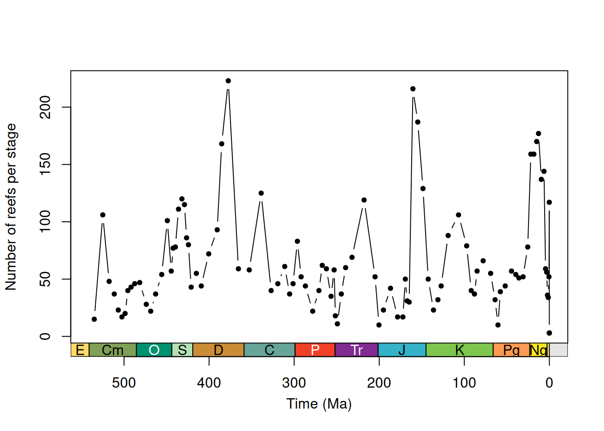
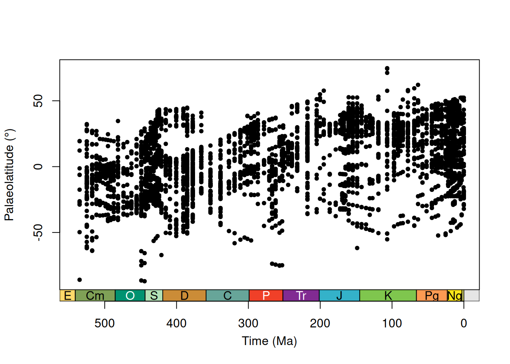
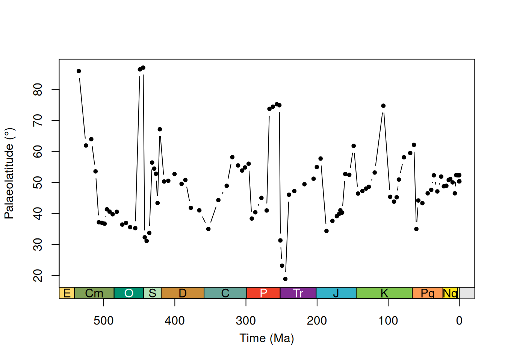
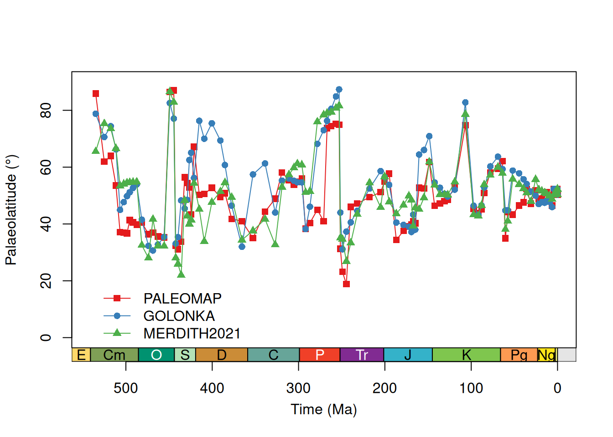

install.packages("palaeoverse")Latitudinal trends in Phanerozoic reefs
Introduction
palaeoverse is an R package developed by palaeobiologists, for palaeobiologists. The aim of the package is to generate a community-driven toolkit of generic functions for the palaeobiological community. The package does not provide implementations of statistical analyses, rather it provides auxiliary functions to help streamline analyses and improve code readability and reproducibility. This tutorial is provided to guide you through the installation process and some of the functionality available within palaeoverse. To do so, we will focus on a usage example looking at latitudinal trends in Phanerozoic reefs.
Installation
The palaeoverse package can be installed via CRAN or its dedicated GitHub repository if the development version is preferred. To install via the CRAN, simply use:
To install the development version, first install the devtools package, and then use install_github to install palaeoverse directly from GitHub.
install.packages("devtools")
devtools::install_github("palaeoverse/palaeoverse")You can now load palaeoverse using the default library function:
library(palaeoverse)Before we get onto the good stuff, the development team has a small request. If you use palaeoverse in your research, please cite the associated publication. This will help us to continue our work in supporting you to do yours. You can access the appropriate citation via:
citation("palaeoverse")To cite palaeoverse in publications, use the following citation:
Jones, L.A., Gearty, W., Allen, B.J., Eichenseer, K., Dean, C.D.,
Galván S., Kouvari, M., Godoy, P.L., Nicholl, C.S.C., Dillon, E.M.,
Flannery-Sutherland, J.T., Chiarenza, A.A. 2023. palaeoverse: A
community-driven R package to support palaeobiological analysis.
Methods in Ecology and Evolution. 14(9), 2205--2215. doi:
10.1111/2041-210X.14099
A BibTeX entry for LaTeX users is
@Article{,
title = {palaeoverse: A community-driven R package to support palaeobiological analysis},
author = {Lewis A. Jones and William Gearty and Bethany J. Allen and Kilian Eichenseer and Christopher D. Dean and Sofía Galván and Miranta Kouvari and Pedro L. Godoy and Cecily S. C. Nicholl and Lucas Buffan and Erin M. Dillon and Joseph T. Flannery-Sutherland and Alfio Alessandro Chiarenza},
year = {2023},
journal = {Methods in Ecology and Evolution},
volume = {14(9)},
pages = {2205--2215},
doi = {10.1111/2041-210X.14099},
}Using the package
Functions in palaeoverse are designed around the assumption that most users’ data are stored in an occurrence data.frame. As such, this is the expected input data format for most functions. We provide two example occurrence datasets (tetrapods and reefs) within the package from different data sources. In this vignette, we will focus on the reefs dataset which is a compilation of Phanerozoic reef occurrences (n = 4,363) from the PaleoReefs Database (Kiessling & Krause, 2022).
# Load the dataset
data(reefs)
# View the first five rows & columns of reefs
reefs[1:5, 1:5] r_number name formation system series
1 1 Tilkideligi Tepe Triassic Upper Triassic
2 2 Hydra Pantokrator Limestone Triassic Upper Triassic
3 3 Shiraho, W-Pacific Neogene Holocene
4 4 Aksu-Terziler area Triassic Upper Triassic
5 5 Adnet, Salzburg Triassic Upper TriassicNote the structure of the dataset. Each row contains a unique occurrence and each column contains a unique variable.
Let’s begin!
Reefs have long been considered good tracers of past tropical and subtropical conditions (Kiessling, 2001; Perrin & Kiessling, 2010). More specifically, their distribution has historically been used to infer the latitudinal extent of tropical and subtropical climatic conditions in deep time. This is of course an oversimplification given all we know about modern reefs systems and their engineers. However, for the purpose of this example, let’s not get weighed down by the finer details.
In this example, we will use the reefs dataset to examine latitudinal trends in Phanerozoic reefs and demonstrate some of the functionality available in palaeoverse.
Let’s start by exploring the dataset. Before conducting any analyses, it is always a good idea to explore your data and understand what you are working with. Details related to the example datasets can be accessed via the usual documentation call:
# Call documentation for dataset
?reefs
# You can also use
help(reefs)Let’s start by exploring the data a little:
# How many reefs are there in the dataset?
# Each row represents an individual reef.
nrow(reefs)[1] 4363Not bad (n = 4363), that’s quite a bit of data to play with! Remember that these are reefs (whole ecosystems), not individual occurrences of fossil organisms like in tetrapods. But how much does this vary across time? We can make use of the group_apply wrapper function to run a function across subsets of data.
# How many reefs per interval?
# Let's group by the interval column to test
reef_counts <- group_apply(occdf = reefs, group = "interval", fun = nrow)
head(reef_counts) nrow interval
1 2 (early?) Toarcian
2 1 Aalenian-Bajocian
3 4 Aalenian/Bajocian
4 1 Aalenian/lower Bajocian
5 1 Abadehian
6 6 AeronianOh dear, we’ve just hit a common issue… our reef data does not conform to a common time scale! Some reefs are resolved to stage level, while others are resolved to a coarser or finer temporal resolution. In some instances, regional names are also used, while international names are used in others. This makes it challenging to make comparisons through time… one solution could be to use age values to bin the reefs into time bins, but no age range data is provided in the dataset (i.e. “max_ma” and “min_ma”). We must therefore use the names of each interval to link to a common time scale, the ‘International Geological Stages’ established by the International Commission on Stratigraphy (ICS). Fortunately, we can make use of the look_up function to do so. This function can be used to assign international geological stages and numeric ages to occurrences, or use a user-defined interval key to link to a common time scale. Here, we will use the example interval_key available in palaeoverse to assign international geological stage names and numeric ages.
# Load the interval key
data("interval_key")
# Assign a common time scale based on an interval key
reefs <- look_up(occdf = reefs,
early_interval = "interval",
late_interval = "interval",
int_key = interval_key)
# Example output
reefs[100:110, 15:19] early_stage late_stage interval_max_ma interval_mid_ma interval_min_ma
100 Ladinian Carnian 242.0 234.50 227.0
101 Norian Norian 227.0 217.75 208.5
102 Rhaetian Rhaetian 208.5 204.90 201.3
103 Ladinian Carnian 242.0 234.50 227.0
104 Norian Rhaetian 227.0 214.15 201.3
105 Anisian Anisian 247.2 244.60 242.0
106 Rhaetian Rhaetian 208.5 204.90 201.3
107 Sinemurian Sinemurian 199.3 195.05 190.8
108 Oxfordian Oxfordian 163.5 160.40 157.3
109 Tithonian Tithonian 152.1 148.55 145.0
110 Tithonian Tithonian 152.1 148.55 145.0Great! We now have a common time scale and numeric ages. However, some of our reefs seem to range through several stages and we can’t count just by the early or late stage. Our data still need to be binned. Let’s check out the time_bins and bin_time functions.
# Now we have numeric ages for our data, we can easily
# remove pre-Phanerozoic data to focus our study
reefs <- subset(reefs, interval_max_ma <= 541)
# Extract Phanerozoic stage-level stages for time bins
bins <- time_bins(interval = "Phanerozoic", rank = "stage")
# Bin data
# bin_time requires "max_ma" and "min_ma" columns
# Rename columns in reefs
colnames(reefs)[which(colnames(reefs) == "interval_max_ma")] <- "max_ma"
colnames(reefs)[which(colnames(reefs) == "interval_min_ma")] <- "min_ma"# Five methods exist in bin_time for binning occurrence data
# You can see details on each via ?bin_time
# Bin by midpoint age
bin_time(occdf = reefs, bins = bins, method = "mid")
# Bin by overlap majority
bin_time(occdf = reefs, bins = bins, method = "majority")
# Bin into every bin within age range
bin_time(occdf = reefs, bins = bins, method = "all")
# Bin randomly into bins within age range (equal probability)
bin_time(occdf = reefs, bins = bins, method = "random", reps = 10)
# Bin randomly into bins within age range (uniform probability)
bin_time(occdf = reefs, bins = bins, method = "point", reps = 10)# Let's go with "all" for this example!
reefs <- bin_time(occdf = reefs, bins = bins, method = "all")Note that the number of rows of reefs have now increased. This is because the “all” method in bin_time duplicates an occurrence for every bin the age range overlaps with.
Let’s check those reef numbers through time again using our binned data:
# Count number of occurrences per interval
reefs_time <- group_apply(occdf = reefs, group = "bin_midpoint", fun = nrow)
# Check output
head(reefs_time) nrow bin_midpoint
1 3 0.0021
2 3 0.0062
3 3 0.00995
4 117 0.07035
5 52 0.4515
6 34 1.287That’s more like it! But, let’s not forget it’s always useful to visualise our data. Why don’t we plot the number of reefs through time? We can even make use of the axis_geo function to add the Geological Time Scale to our plot.
# Plot data
plot(x = reefs_time$bin_midpoint,
y = reefs_time$nrow,
xlab = "Time (Ma)",
ylab = "Number of reefs per stage",
xlim = c(541, 0),
xaxt = "n",
type = "b", pch = 20)
# Add axis of the geological time scale
axis_geo(side = 1, intervals = "periods")
You would (and should) of course want to explore your data a little more than this. However, for the sake of brevity, let’s focus on our research theme: latitudinal trends in Phanerozoic reefs.
When studying modern latitudinal trends (e.g. in biodiversity), researchers can use the geographic coordinates of their samples to conduct analyses. However, as the continents shift through time, palaeobiologists must reconstruct the palaeogeographic coordinates of fossil localities. To do so, Global Plate Models are used (e.g. the PALEOMAP model) to rotate the modern coordinates of fossil localities to their location at time of deposition. The palaeorotate function allows the user to do so using either the ‘point’ or ‘grid’ method. The first approach makes use of the GPlates Web Service and allows point data to be rotated to specific ages using the available models (see https://gwsdoc.gplates.org). The second approach uses reconstruction files of pre-generated palaeocoordinates to spatiotemporally link occurrences’ modern coordinates and age estimates with their respective palaeocoordinates. Let’s give it a shot:
# Palaeorotate occurrences
reefs <- palaeorotate(occdf = reefs, age = "bin_midpoint",
method = "point", model = "PALEOMAP")# Check palaeocoordinates
head(reefs[, c("p_lng", "p_lat")]) p_lng p_lat
1 21.3630 10.0755
2 22.1341 2.3106
3 NA NA
4 NA NA
5 NA NA
6 26.3041 -0.3093Now let’s plot that palaeolatitudinal distribution!
# Plot data
plot(x = reefs$bin_midpoint,
y = reefs$p_lat,
xlab = "Time (Ma)",
ylab = "Palaeolatitude (\u00B0)",
xlim = c(541, 0),
xaxt = "n",
type = "p", pch = 20)
axis_geo(side = 1, intervals = "periods")
Neat! But it’s hard to draw any trends from this data (there is a lot of it!). We can do better… let’s summarise this information… if we assume that reefs are broadly limited to tropical and subtropical climatic conditions, the most poleward reef in each time bin should give us an estimate of the palaeolatitudinal extent of these climatic conditions.
# Let's first assume hemispheric symmetry and convert
# palaeolatitudes to absolute palaeolatitudes
reefs$p_lat <- abs(reefs$p_lat)
# Now we can calculate the most poleward latitude per time bin
# Extract unique interval midpoints
midpoints <- sort(unique(reefs$bin_midpoint))
# Calculate the maximum palaeolatitude for each time bin
reefs_max <- sapply(X = midpoints, FUN = function(x) {
max(reefs[which(reefs$bin_midpoint == x), ]$p_lat, na.rm = TRUE)
} )
# Plot data
plot(x = midpoints,
y = reefs_max,
xlab = "Time (Ma)",
ylab = "Palaeolatitude (\u00B0)",
xlim = c(541, 0),
xaxt = "n",
type = "b",
pch = 20)
# Add axis of the geological time scale
axis_geo(side = 1, intervals = "periods")
That’s definitely much clearer! Should we stop there? Well… how about one last thing… let’s consider how Global Plate Model choice might impact these results using three different models: GOLONKA, PALEOMAP, and MERDITH2021 (Wright et al. 2013; Scotese & Wright, 2018; Merdith et al. 2021).
# We can call multiple models at once with palaeorotate
# First, let's define the models...
models <- c("GOLONKA", "PALEOMAP", "MERDITH2021")
# And now palaeorotate!
reefs <- palaeorotate(occdf = reefs, age = "bin_midpoint",
method = "point", model = models)# Check palaeocoordinates
# When multiple models are called, the name of the model
# is added as a suffix to p_lng and p_lat
head(reefs[, c("p_lng_PALEOMAP", "p_lat_PALEOMAP",
"p_lng_GOLONKA", "p_lat_GOLONKA",
"p_lng_MERDITH2021", "p_lat_MERDITH2021")]) p_lng_PALEOMAP p_lat_PALEOMAP p_lng_GOLONKA p_lat_GOLONKA p_lng_MERDITH2021
1 21.3630 10.0755 35.6565 8.3384 34.4223
2 22.1341 2.3106 31.0982 4.8069 30.8863
3 NA NA 124.2500 24.3330 124.2489
4 NA NA 124.2500 24.3330 124.2493
5 NA NA 124.2500 24.3330 124.2498
6 26.3041 -0.3093 38.0979 4.9270 36.3998
p_lat_MERDITH2021
1 12.1964
2 4.7404
3 24.3367
4 24.3352
5 24.3337
6 4.5809Now we’ve palaeorotated our data, let’s repeat what we did earlier and calculate the most poleward reef occurrence for each model.
# Let's code a little helper function to begin with.
# This is generally useful when repeating code several times!
p_lat_max <- function(occdf, midpoint, p_lat) {
# Get absolute palaeolatitudes
occdf[, p_lat] <- abs(occdf[, p_lat])
# Extract unique bin midpoints
midpoints <- sort(unique(occdf[, midpoint]))
# Calculate maximum palaeolatitude for each bin
lat_max <- sapply(X = midpoints, FUN = function(x) {
max(occdf[which(occdf[, midpoint] == x), ][, p_lat], na.rm = TRUE)
})
# Bind data
lat_max <- cbind.data.frame(midpoints, lat_max)
# Return df
return(lat_max)
}
# Calculate maximum palaeolatitude of reefs for each time bin for each model
paleomap <- p_lat_max(occdf = reefs,
midpoint = "bin_midpoint",
p_lat = "p_lat_PALEOMAP")
golonka <- p_lat_max(occdf = reefs,
midpoint = "bin_midpoint",
p_lat = "p_lat_GOLONKA")
merdith <- p_lat_max(occdf = reefs,
midpoint = "bin_midpoint",
p_lat = "p_lat_MERDITH2021")
# Set up plot
plot(x = NULL,
y = NULL,
xlab = "Time (Ma)",
ylab = "Palaeolatitude (\u00B0)",
xlim = c(541, 0),
ylim = c(0, 90),
xaxt = "n")
# Plot maximum palaeolatitudes for each model
lines(x = paleomap$midpoints, y = paleomap$lat_max,
type = "o", col = "#e41a1c", pch = 15)
lines(x = golonka$midpoints, y = golonka$lat_max,
type = "o", col = "#377eb8", pch = 16)
lines(x = merdith$midpoints, y = merdith$lat_max,
type = "o", col = "#4daf4a", pch = 17)
# Add legend
legend(530, 20, legend=c("PALEOMAP", "GOLONKA", "MERDITH2021"),
col = c("#e41a1c", "#377eb8", "#4daf4a"),
lty = 1, pch = c(15, 16, 17), bty = "n")
# Add geological time scale axis
axis_geo(side = 1, intervals = "periods")
We will leave you to make your own conclusions…
Hopefully this vignette has shown you the potential uses for palaeoverse functions and helped provide a workflow for your own analyses. If you have any questions about the package or its functionality, please feel free to join our Google Group and leave a question; we’ll aim to answer it as soon as possible!
References
Kiessling, W. (2001). Paleoclimatic significance of Phanerozoic reefs. Geology 29, 751–754.
Kiessling, W. & Krause, M. C. (2022). PaleoReefs Database (PARED) (1.0) Data set. DOI: 10.5281/zenodo.6037852.
Merdith, A., Williams, S.E., Collins, A.S., Tetley, M.G., Mulder, J.A., Blades, M.L., Young, A., Armistead, S.E., Cannon, J., Zahirovic, S., Müller. R.D. (2021). Extending full-plate tectonic models into deep time: Linking the Neoproterozoic and the Phanerozoic. Earth-Science Reviews, 214(103477). DOI: 10.1016/j.earscirev.2020.103477.
Perrin, C. & Kiessling, W. (2010) Latitudinal trends in Cenozoic reef patterns and their relationship to climate. Carbonate Syst. Oligocene–Miocene Clim. Transit. 17–33.
Scotese, C., & Wright, N. M. (2018). PALEOMAP Paleodigital Elevation Models (PaleoDEMs) for the Phanerozoic. PALEOMAP Project.
Wright, N., Zahirovic, S., Müller, R. D., & Seton, M. (2013). Towards community-driven paleogeographic reconstructions: integrating open-access paleogeographic and paleobiology data with plate tectonics. Biogeosciences, 10(3), 1529-1541. DOI: 10.5194/bg-10-1529-2013.